L'art d'être en Commun
accompagner pour mieux explorer
Par Etienne Delay
Le jeudi 2 avril 2026 - Cirad Lavalette
Jury :
Arnaud Banos — CNRS — Garant
Alexis Drogoul — IRD — Président
Sophie Martin — INRAe — Rapportrice
Nicolas Becu — CNRS — Rapporteur
Amadou Thierno Gaye — UCAD - ESP — Rapporteur
Stéphanie Leyronas — AFD — Examinatrice
Franck Varenne — Univ. Rouen — Examinateur
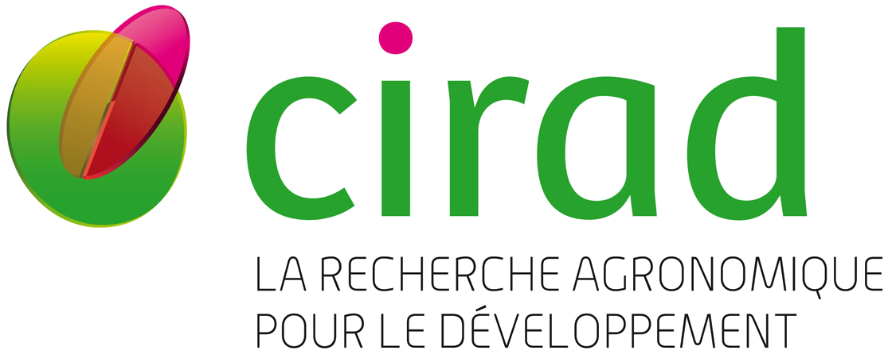 |
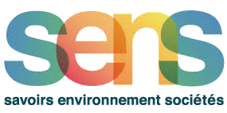 |
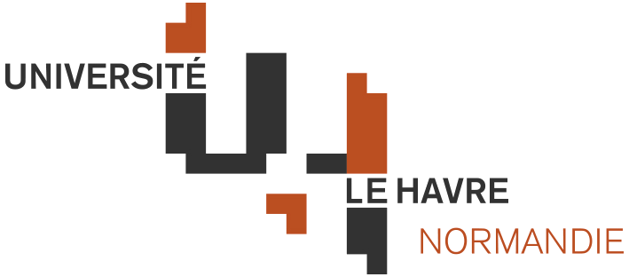 |
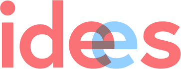 |
Mon parcours de géographe
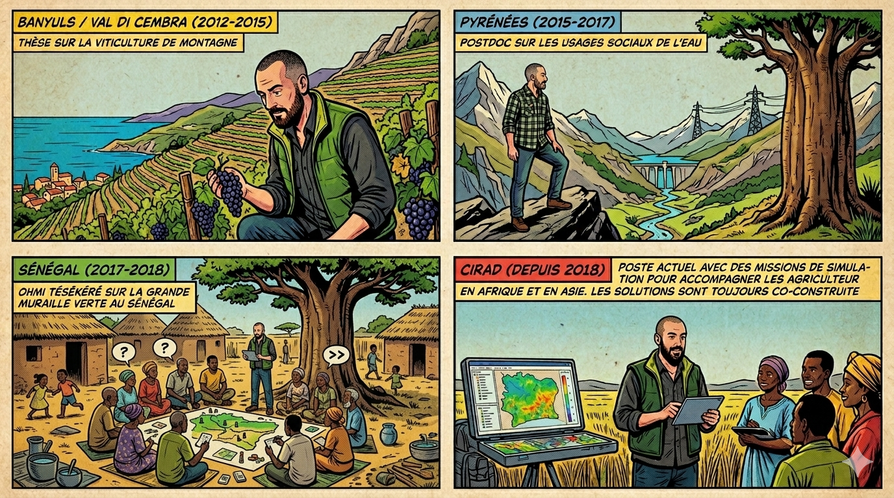
Une géographie imprégnée d'interdisciplinarité et de simulation spatiale!
Mise en garde
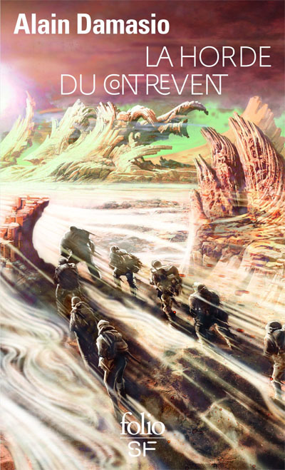 |
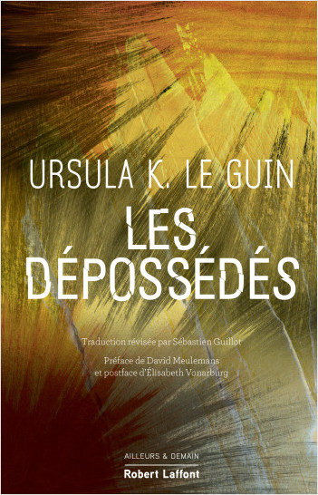 |
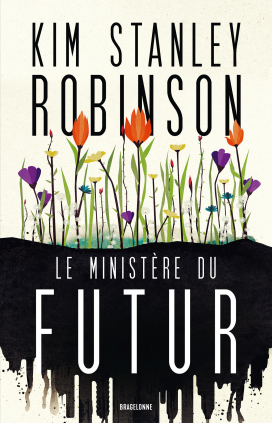 |
Le prélude : L'atterrissage et la friction
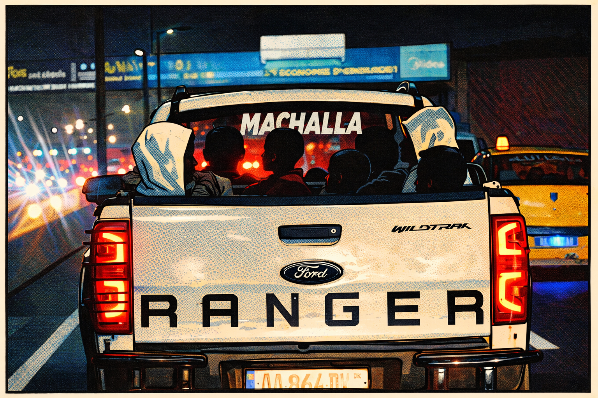

- L'atterrissage invente des prises concrètes, collectives, pour habiter ce monde au lieu de le subir.
- Une expatriation au Sénégal
- A l'Ecole Supérieure Polytechnique de l'UCAD avec le Professeur Alassane Bah
- La Friction (Anders, 1957), est liée à une société qui accélère tout... sauf la capacité à assumer ce qu'elle met en mouvement.
La friction est partout — mais c'est l'exil des repères qui la rend enfin visible. Percevoir la friction, c'est reprendre la main ; sinon, elle te pousse.
Point de vue n° 1 : Le cercle de l'égalité (L'Arène)
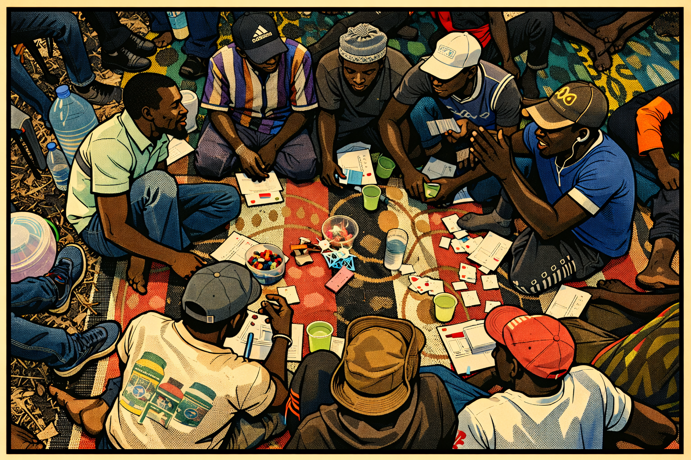

- L'égalité (au sens de Rancière, 1987) n'est pas un horizon moral : c'est la condition d'entrée dans l'échange — sans elle, aucune parole ne circule, aucune action ne se transmet.
- Ce qui rend cette égalité opérante, c'est "l'espace du commun" d'Arendt (1958) : l'espace entre les Hommes, qui expose le monde à la discussion et, dans le même geste, nous relie autant qu'il nous sépare.
L'arbre à palabres : une égalité située


- L'arbre à palabres pose le contexte
- Le chercheur n'indique pas la route : il tient l'espace où chacun peut tracer la sienne.
- Pour Rancière (1987), l'émancipation intellectuelle n'est possible que si l'élève se met lui-même à mobiliser ses capacités de réflexion, le "maître" n'est plus le gardien du savoir mais de la méthode.
Point de vue n° 2 : Le double déplacement du terrain
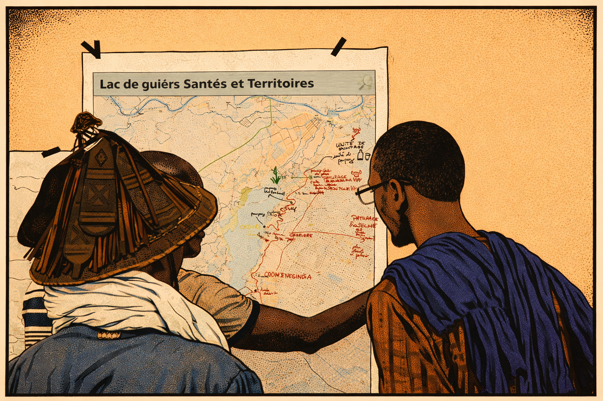
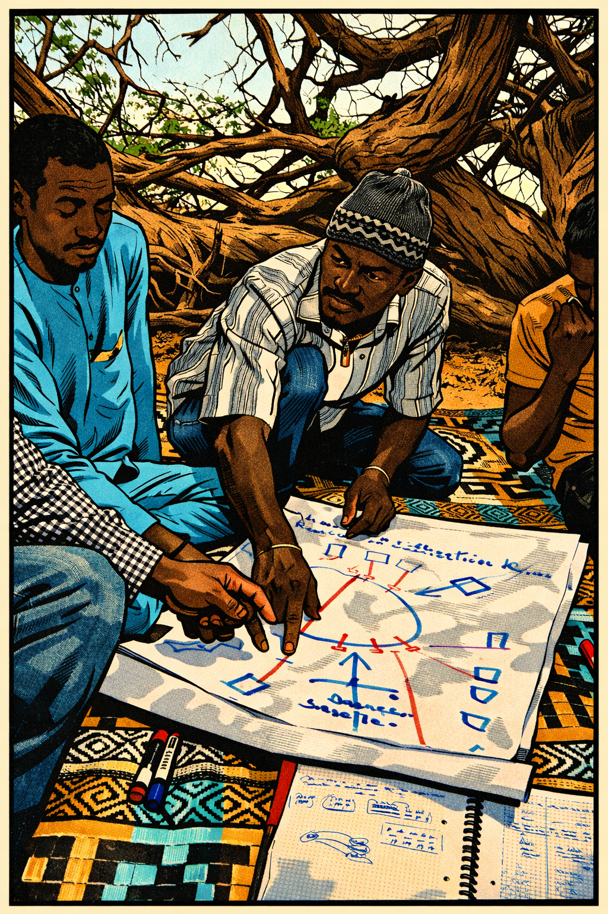
- Un terrain à décrire
- Un terrain support de création conceptuelle.
Ici, le local ne devient pas “global” : il devient connectable. Une connaissance individuelle se noue aux autres, et le collectif produit un savoir en réseau
Sur le terrain des concepts


Pour Deleuze et Guattari (1980), deux types de savoirs :
- Rhizome : se tisse en réseau, par connexions multiples et traductions situées.
- Racine-pivot : stabilise, catégorise, hiérarchise et valide par méthodes/preuves.
Ca se combine très bien avec les rôles de I. Stangers (2022) :
- Le sédentaire : connaît son territoire et ne supporte pas qu’on vienne lui dire que le monde est pluriel.
- Le nomade : est constamment obligé de composer avec des arrangements locaux. Il n’a pas de lieu. Il est donc tributaire des rencontres et du bon vouloir des sédentaires.
Point de vue n° 3 : Le décalage prométhéen


Sert de pivot pour tenir ensemble trois problèmes qui traversent tout ce travail : i) la vérité, ii) l'émancipation et iii) la responsabilité dans des démarches de modélisation d'accompagnement (ComMod)
- Décalage prométhéen (Anders, 1957) : rendre visible l'écart entre puissance technique et capacité à percevoir les conséquences.
- Moment de révélation : à l'écran, l'impact simulé de leurs pratiques.
- De la sidération à l'émancipation (Rancière, 1987) : le choc déclenche une prise en charge intellectuelle — on se saisit du problème au lieu de le subir.
grille de lecture des vérités et de l'aliénation


- Pas de posture "surplombante" : le modèle/la science n'impose pas “le vrai” ni “le bien”, il/elle soutient la discussion.
- Décalage savoir-pouvoir / jugement moral : Plus nos systèmes techniques sont puissants et complexes, plus on agit sans voir clairement les conséquences.
- Diagnostic d'aliénation : cette distance explique pourquoi acteurs et institutions “ne font pas le lien” entre pratiques quotidiennes et déséquilibres observés (responsabilités diluées, actions collectives freinées).
Un outil pour “objectiver” l'émancipation… sans la prescrire


- Objectiver l'émancipation : utiliser le décalage prométhéen pour observer si le collectif relie mieux actions → causes → effets → responsabilités au fil du processus.
- Sans prescrire une destination : on évalue le chemin parcouru (capacités, prise de recul, pouvoir d'agir) sans fixer à l'avance la “bonne” solution, pour éviter une nouvelle domination.
Point de vue n° 4 : L'exploration et l'imagination


- Des sorties chiffrées aux récits : faire produire aux acteurs des narratifs à partir des résultats du modèle pour interpréter et donner du sens.
- Imagination située plutôt que “résultats” : l'exploration de modèles devient un support de projection et de discussions collectives, pas seulement une lecture technique des chiffres.
l'exploration pour s'affranchir d'une rationalité “réductrice”


- Élargir ce que le modèle ne voit pas : les récits “étendent les contours” en réintroduisant des dimensions peu/pas formalisées (relations, effets indirects, vécus, contextes).
- Imaginaire radical (Castoriadis, 1999) : une puissance créatrice par laquelle une société produit de nouvelles significations discutées dans l'espace publique.
- Émergence = “graines d'imaginaire” : nourrit une créativité collective, ouvrant des nouvelles émancipations / autonomisations, au-delà de simples “solutions”.
Explorer la pluralité plutôt que l'optimum


- Optimisation vs viabilité (Aubin, 1991) : l'optimisation suppose une connaissance du futur, tandis que la viabilité cherche l'ensemble des trajectoires possibles sous contraintes pour pouvoir les discuter.
- Critique du “récit optimal” : se limiter à des narratifs optimaux est restrictif (voire “criminel”) car cela masque la pluralité des trajectoires.
- Ouvrir l'espace des futurs : l'exploration sert à rendre visibles des futurs multiples.
Point de vue n° 5 : La maturité du Commun


- L'approche par les communs donne un cadre politique et pratique : explorer ensemble, produire du sens, et accroître le pouvoir d'agir.
- La maturité des communs, c’est savoir naviguer entre :
- Commun de ressource : un usage partagé
- Commun de service : des usages multiples d’une même ressource
- Commun de territoire : des usages imbriqués de ressources multiples
Faire commun : nommer, contester, instituer


Faire commun : apprendre à gouverner ensemble. Ces dispositifs (exploration + émergences + narratifs) développent des capacités clés :
- Capacité à nommer les enjeux : mettre en mots des effets invisibles.
- Capacité à contester : révéler les angles morts, ce que le modèle ne capte pas.
- Capacité à instituer : faire émerger des règles, des priorités, des trajectoires “désirables/viables”.
Pluralité des trajectoires = pluralité des mondes


- Refus de l'optimum : pas un futur “idéal”, mais plusieurs futurs possibles.
- Équilibres situés : des compromis négociés, révisables et adaptés aux contextes.
- Diversité des valeurs : ce qui compte n'est pas unique, les critères restent pluralistes.
Cela ouvre l'espace des futurs — multiples, discutables et appropriables — et nourrit des imaginaires transformateurs.
Point de vue n° 6 : Vivre bien dans un monde mauvais


Selon moi :
- Pas de "bonne formule" universelle : la réponse se construit au cas par cas, depuis le terrain et l'expérience vécue, plutôt que depuis un principe abstrait.
- "Répondre" = s'engager : il s'agit d'assumer une responsabilité, de garantir en retour (respondere) et de prendre part concrètement.
- Le politique naît de l'action concertée : avec Arendt, le politique se situe dans le faire ensemble et la construction d'un monde commun.
Une science bonne ne peut être que "partagée"
Un monde en commun qui se contruit avec la prochaine génération de chercheurs
|
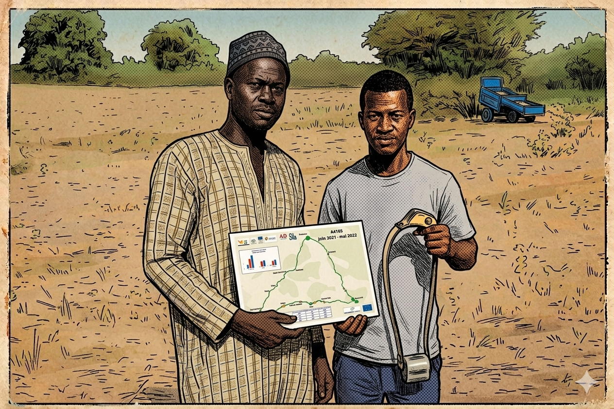 |

|
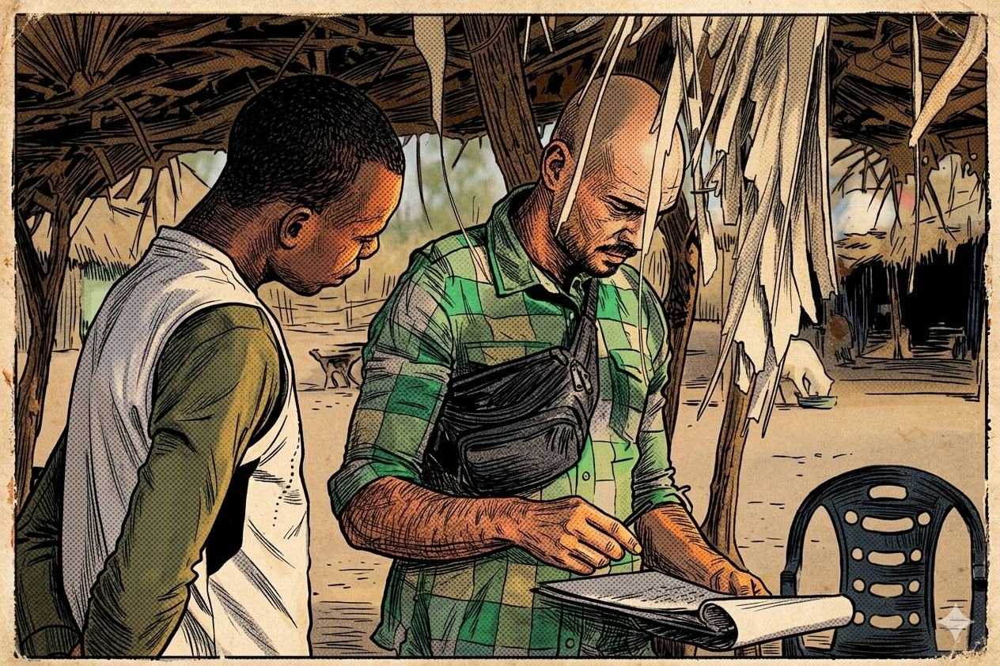 |
| Cheick A. Traoré | Arthur Scriban | François Vendel |
Perspectives


-
Ralentir & tenir le fil (accompagnement) :
offrir un fil d'Ariane — pas des solutions clés en main, mais une continuité d'attention
qui aide à ne pas se perdre.
Prends ce que tu veux… laisse le reste… mais surtout, ne coupe pas.
- La Viabilité comme cadre analytique : dans des contextes de développement, quel que soit l'objet intermédiaire, répondre aux questions qui se posent sous forme de contraintes et de trajectoires.
- Après / retour en France : l'absence comme révélateur de la réussite et de la force des liens entre ici et là-bas.
Quels points de fuites ?

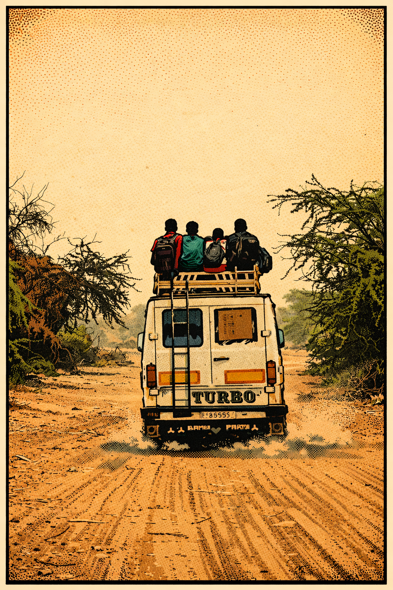
- Comment universaliser sans production d’un universel homogénéisant, à partir d’une approche par les communs (Inspiré de S.B. Diagne 2025) → Les communs pourraient ils être une forme concrète totalisation ?
- En quoi l’exploration d'accompagnement (ComExp) constitue-t-elle un dispositif de mobilisation de l’imagination radicale (Castoriadis, 1999) permettant aux acteurs de co-instituer des communs ?
à suivre ...